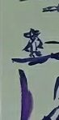

整理文件发现了几张初中高中画的画，当初也曾经想过大学学美术，最后还是跟着潮流学了计算机，曾经想过如果家里有钱，我还真去学美术的（当然也不是说学美术就赚不到钱，但是学计算机毕竟现在能独立生活，也曾经想过在大学里，左手程式右手诗，有空就画画，吉他，读诗（想想好中二啊）但是想想而来，入大学到现在，这个“有空”从何而来，也算是我背叛了当初的梦想而苟活至今，当然这也是时代的必然发展，就好比入了大学你有多久没开心一笑了。
大学时间过的太快，真的太快，快到你没空停下来看一场电影，但是高三却能追完整个火影。突然看到曾经的画，对于当初那份快乐，现在除了鼻子酸酸，真的只有回味了。望你我珍惜大学时光，不负韶华。
想了一下还是留几张照片放这里，希望自己能好好生活当一个正常人，当然从技术而言，肯定没法比艺术生，闻道有先后，术业有专攻

]


